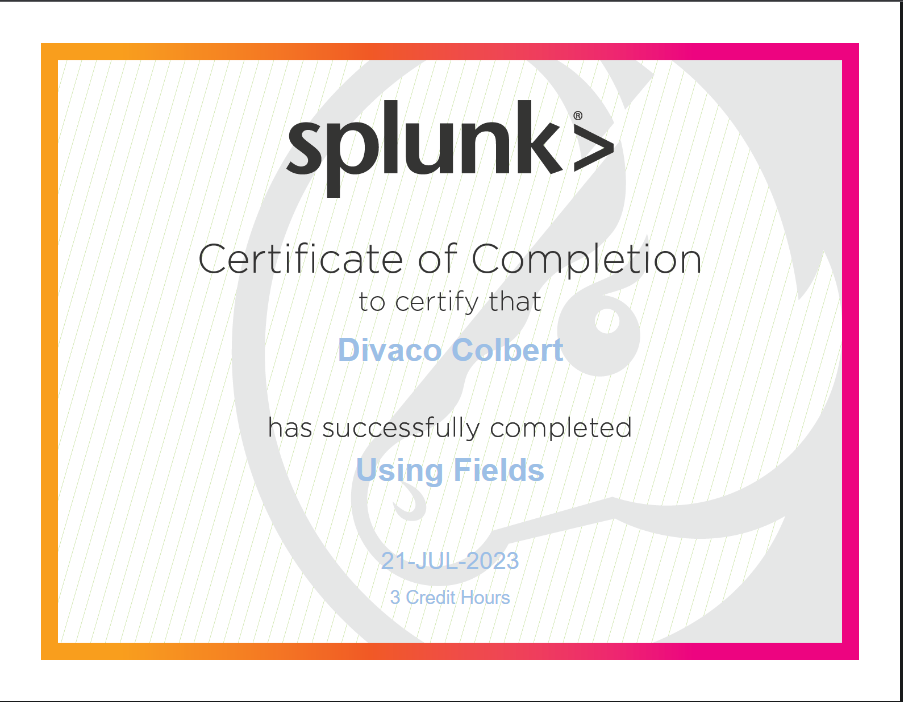

Earning the Splunk eLearning lab certificate substantiated my expertise in utilizing Splunk for log analysis and security monitoring. This accomplishment attests to my ability to harness advanced tools for proactive threat detection. Through the comprehensive eLearning lab program, I immersed myself in the world of Splunk—an industry-leading platform for data analytics and security information and event management (SIEM). This journey provided a deep dive into the intricacies of log collection, data parsing, visualization, and correlation, all of which are pivotal in identifying anomalies and potential security breaches. My experience extended beyond mere theoretical concepts; I engaged in hands-on activities that simulated real-world scenarios. From ingesting diverse data sources to creating custom dashboards and alerts, I explored the spectrum of Splunk's capabilities. This practical exposure equipped me with the skills needed to translate raw data into actionable insights and, ultimately, proactive security measures.
